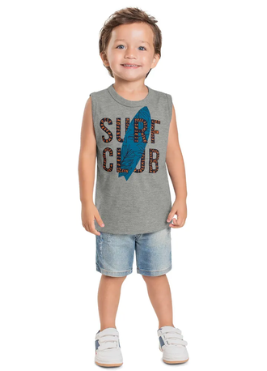

Nossa vida aconteceu dentro de casa como nunca no último ano.
E na esteira desse comportamento, empresas de moda e beleza tiveram novas oportunidades de negócio. Os números mostram a alta preocupação do brasileiro com a aparência:
76% diz gostar de se sentir mais bonitos e bem-cuidados.
Costuma-se dizer que o novo ano só começa depois do carnaval. Portanto, de fato, ele se iniciou e novas tendências da moda surgiram. Apesar das novidades, muitas peças de 2022 vão continuar no radar dos estilistas em 2023.

Estilos populares também marcarão presença no inverno do próximo ano, tais como o grunge, o militar, o casual e o clássico.
Dentre as tendências da moda infantil para o inverno de 2023, uma novidade é o uso de cores vibrantes, mais comuns nas coleções de primavera/verão. Isso deixa para trás aquela ideia de que as roupas de inverno são todas feitas em tons mais neutros e frios.
No que tange aos tecidos, o inverno de 2023 promete trazer uma infinidade de opções, que vão desde o luxo do veludo até a praticidade do jeans.